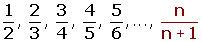
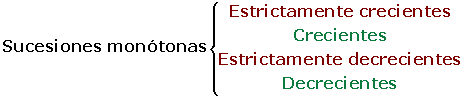

Tipos de sucesiones
Sucesiones convergentes
Las sucesiones convergentes son las sucesiones que tienen límite finito.

Límite = 0

Límite = 1
Sucesiones divergentes
Las sucesiones divergentes son las sucesiones que no tienen límite finito.

Límite = ∞
Sucesiones oscilantes
Las sucesiones oscilantes no son convergentes ni divergentes. Sus términos alternan de mayor a menor o viceversa.
1, 0, 3, 0, 5, 0, 7, ...
Sucesiones alternadas
Las sucesiones alternadas son aquellas que alternan los signos de sus términos. Pueden ser:
Convergentes
1, −1, 0.5, −0.5, 0.25, −0.25, 0.125, −0.125,..
Tanto los términos pares como los impares tienen de límite 0.
Divergentes
1, 1, 2, 4, 3, 9, 4, 16, 5, 25, ...
Tantos los términos pares como los impares tienen de límite +∞.
Oscilantes
−1, 2, −3, 4 ,−5, ..., (−1)n n
Sucesiones monótonas

Sucesiones estrictamente crecientes
Se dice que una sucesión es estrictamente creciente si cada término es mayor que el anterior.
an+1 > an
2, 5, 8, 11, 14, 17,...
5 > 2; 8 > 5; 11 > 8; ...
Sucesiones crecientes
Se dice que una sucesión es creciente si cada término es mayor o igual que el anterior.
an+1 ≥ an
2, 2 , 4, 4, 8, 8,...
2 ≥ 2; 4 ≥ 2; 4 ≥ 4; ...
Sucesiones estrictamente decrecientes
Se dice que una sucesión es estrictamente decreciente si cada término de la sucesión es menor que el anterior.
an+1 < an
1, 1/2, 1/3, 1/4, 1/5, 1/6,...
1/2 < 1; 1/3 < 1/2 ; 1/4 < 1/3; ...
Sucesiones decrecientes
Se dice que una sucesión es decreciente si cada término de la sucesión es menor o igual que el anterior.
an+1 ≤ an
Sucesiones constantes
Se dice que una sucesión es constante si todos su términos son iguales, an= k.
an = an+1
5, 5, 5, 5, ...
Sucesiones acotadas inferiormente
Una sucesión está acotada inferiormente si todos sus términos son mayores o iguales que un cierto número K, que llamaremos cota inferior de la sucesión.
an ≥ k
A la mayor de las cotas inferiores se le llama extremo inferior o ínfimo.
Si el ínfimo de una sucesión es uno de sus términos se le llama mínimo.
Sucesiones acotadas superiormente
Una sucesión está acotada superiormente si todos sus términos son menores o iguales que un cierto número K', que llamaremos cota superior de la sucesión.
an ≤ k'
A la menor de las cotas superiores se le llama extremo superior o supremo.
Si el supremo de una sucesión es uno de sus términos se llama máximo.
Sucesiones acotadas superiormente
Una sucesión está acotada superiormente si todos sus términos son menores o iguales que un cierto número K', que llamaremos cota superior de la sucesión.
an ≤ k'
A la menor de las cotas superiores se le llama extremo superior o supremo.
Si el supremo de una sucesión es uno de sus términos se llama máximo.
Sucesiones acotadas
Una sucesión se dice acotada si está acotada superior e inferiormente. Es decir si hay un número k menor o igual que todos los términos de la sucesión y otro K' mayor o igual que todos los términos de la sucesión. Por lo que todos los términos de la sucesión están comprendidos entre k y K'.
k ≤ an ≤ K'
Ejemplos de sucesiones
an = 1, 2, 3, 4, 5, ...n
Es creciente.
Está acotada inferiormente
Cotas inferiores: 1, 0, -1, ...
El mínimo es 1.
No está acotada superiormente.
Divergente.
bn = -1, -2,-3, -4, -5, ... -n
Es decreciente.
Está acotada superiormente.
Cotas superiores: -1, 0, 1, ...
El máximo es -1.
No está acotada inferiormente.
Divergente.
cn = 2, 3/2, 4/3, 5/4, ..., n+1 /n
Es decreciente.
Está acotada superiormente.
Cotas superiores: 2, 3, 4, ...
El máximo es 2.
Está acotada inferiormente.
Cotas inferiores: 1, 0, -1, ...
El ínfimo es 1.
Convergente, límite = 1.
dn= 2, -4, 8, -16, 32, ..., (-1)n-1 2n
No es monótona.
No está acotada.
No es convergente ni divergente.